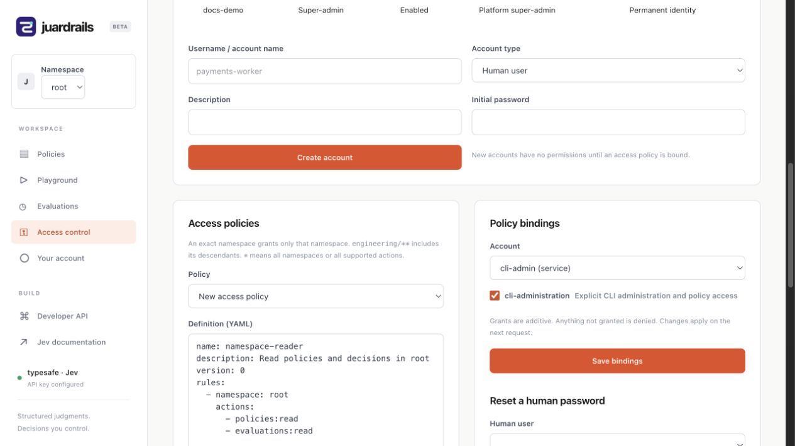

Access control
Juardrails separates the policies that make decisions from access policies that decide who may work with them. Every request is authenticated and checked against namespace grants.
Human and service identities
The permanent human super-admin is created once during bootstrap and can use the browser access page. Other humans sign in with passwords. Service accounts have no passwords; an administrator issues them expiring tokens. Every non-admin account starts with no grants.
Humans
Browser sessions use an HttpOnly, SameSite=Strict cookie. Cookie-authenticated writes need a CSRF token.
Services
Use an opaque bearer token. The CLI accepts only service tokens from its private credential file.
Service tokens require an expiry no more than 365 days ahead. Secrets are shown once at creation; token metadata can be listed and tokens revoked. Disabling an account revokes its tokens. The human super-admin cannot be disabled or deleted.
Namespaces
The default namespace is root. Names such as engineering/production provide separate policy IDs, revisions, and evaluation history. Parents must exist before nested namespaces are created. Namespace names are retained to preserve historical references.
REST clients send X-Juardrails-Namespace; CLI clients use -namespace NAME or JUARDRAILS_NAMESPACE. Listing namespaces reveals only those for which the principal has at least one action.
Access policies and bindings
An access policy is a collection of namespace-action rules. Bind one or more policies to a principal; grants add together, and everything else is denied.
name: production-evaluator
description: Evaluate approved production guardrails
rules:
- namespace: engineering/production
actions:
- policies:evaluate| Selector | Meaning |
|---|---|
engineering/production | Exact namespace only |
engineering/** | Engineering and all descendants |
* | Every namespace |
Exact namespace rules do not inherit to descendants. Grants are checked on every request, so binding changes affect the next request. An evaluation already in progress completes under its original authorization.
Actions
| Action | Allows |
|---|---|
policies:read | List, get, and inspect policy revisions |
policies:create | Create policies and validate new documents |
policies:update | Update existing policies and validate documents |
policies:delete | Delete current policies |
policies:evaluate | Evaluate a known active policy ID |
policies:simulate | Simulate supplied answers |
evaluations:read | Read evaluation history |
admin:manage | Manage identities, grants, tokens, namespaces, and auth settings through the API |
admin:manage is special: it requires an explicit rule with namespace * bound to a service account. A wildcard action does not imply it. The browser access page remains restricted to the human super-admin.
Design a narrow service account
Create a service principal
Use the access page or juardrails cli admin users create while signed in as an administrator.
Bind only required actions
For an app that evaluates one known policy, policies:evaluate in one namespace is enough.
Issue and inject the token
Set an expiry, store the returned secret once in a protected credential file, and plan rotation before it expires.

See the Web UI walkthrough for the complete browser flow.